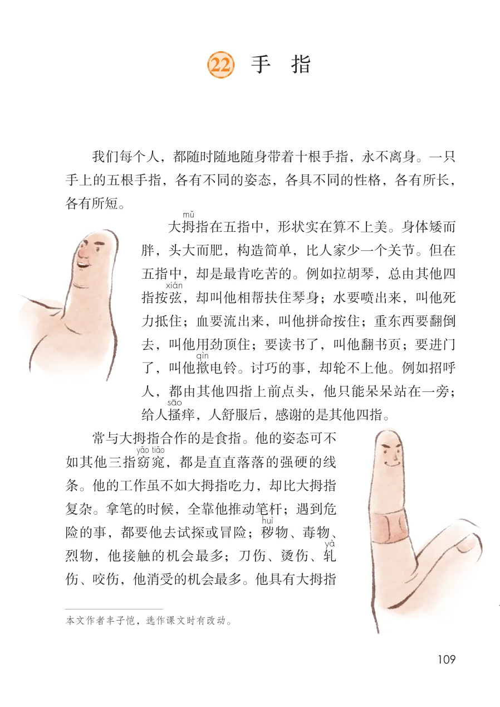
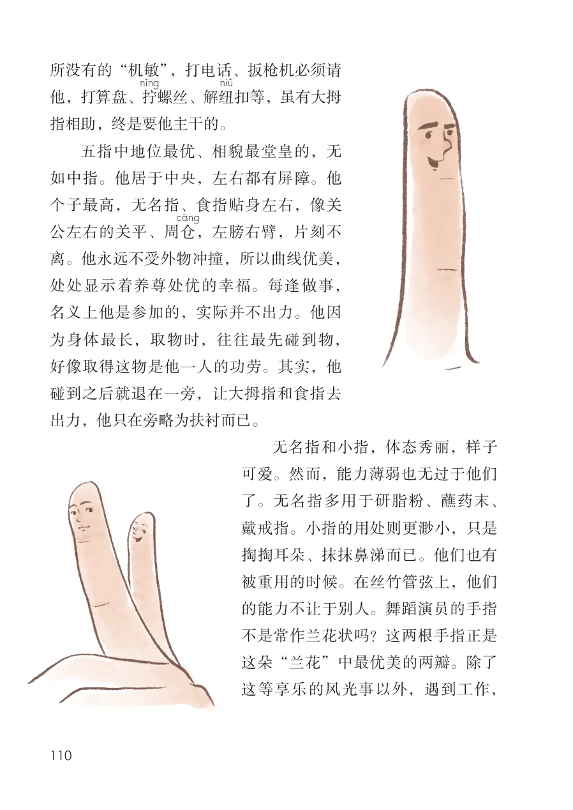
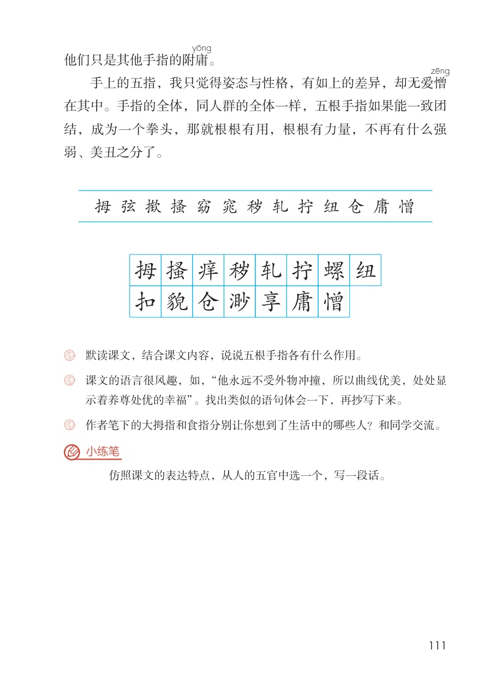

展开章节菜单
22 手 指
我们每个人，都随时随地随身带着十根手指，永不离身。一只
手上的五根手指，各有不同的姿态，各具不同的性格，各有所长，
各有所短。
大拇
指在五指中，形状实在算不上美。身体矮而
胖，头大而肥，构造简单，比人家少一个关节。但在
五指中，却是最肯吃苦的。例如拉胡琴，总由其他四
，却叫他相帮扶住琴身；水要喷出来，叫他死
力抵住；血要流出来，叫他拼命按住；重东西要翻倒
去，叫他用劲顶住；要读书了，叫他翻书页；要进门
了，叫他揿
电铃。讨巧的事，却轮不上他。例如招呼
人，都由其他四指上前点头，他只能呆呆站在一旁；
痒，人舒服后，感谢的是其他四指。
常与大拇指合作的是食指。他的姿态可不
，都是直直落落的强硬的线
条。他的工作虽不如大拇指吃力，却比大拇指
复杂。拿笔的时候，全靠他推动笔杆；遇到危
险的事，都要他去试探或冒险；秽
烈物，他接触的机会最多；刀伤、烫伤、轧
伤、咬伤，他消受的机会最多。他具有大拇指
查看教材原页（保留全部图片、注音与原始排版）

所没有的“机敏”，打电话、扳枪机必须请他，打算盘、拧
螺丝、解纽
扣等，虽有大拇指相助，终是要他主干的。
五指中地位最优、相貌最堂皇的，无如中指。他居于中央，左右都有屏障。他个子最高，无名指、食指贴身左右，像关公左右的关平、周仓
，左膀右臂，片刻不离。他永远不受外物冲撞，所以曲线优美，处处显示着养尊处优的幸福。每逢做事，名义上他是参加的，实际并不出力。他因为身体最长，取物时，往往最先碰到物，好像取得这物是他一人的功劳。其实，他碰到之后就退在一旁，让大拇指和食指去出力，他只在旁略为扶衬而已。
无名指和小指，体态秀丽，样子
可爱。然而，能力薄弱也无过于他们
了。无名指多用于研脂粉、蘸药末、
戴戒指。小指的用处则更渺小，只是
掏掏耳朵、抹抹鼻涕而已。他们也有
被重用的时候。在丝竹管弦上，他们
的能力不让于别人。舞蹈演员的手指
不是常作兰花状吗？这两根手指正是
这朵“兰花”中最优美的两瓣。除了
这等享乐的风光事以外，遇到工作，
查看教材原页（保留全部图片、注音与原始排版）

他们只是其他手指的附庸
在其中。手指的全体，同人群的全体一样，五根手指如果能一致团
。
手上的五指，我只觉得姿态与性格，有如上的差异，却无爱憎
结，成为一个拳头，那就根根有用，根根有力量，不再有什么强
弱、美丑之分了。
拇弦揿搔窈窕秽轧拧纽仓庸憎
课文的语言很风趣，如，“他永远不受外物冲撞，所以曲线优美，处处显
仿照课文的表达特点，从人的五官中选一个，写一段话。
查看教材原页（保留全部图片、注音与原始排版）
